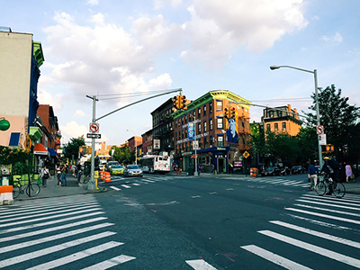

(주)슈퍼마케팅은 클라이언트 서포트 전문 마케팅 에이전시로
대기업을 포함하여 국제 구호 개발 기구인 NGO, NPO단체의 위탁을 받아
F2F(Face to Face) 사람 대 사람으로 마주하는, 인권친화적인
펀딩을 도모하는 컨설팅 기업입니다.
ABOUT
SUPERMARKETING
WHAT IS
F2F(FACE to FACE)?
대중과 직접 대면을 통해 이끌어내는 효과적인 마케팅방법
고객사의 상품과 특성에 맞춰 적절한 대상을 선별하여 접촉할 수 있고
대중들과의 질의 응답과 질문해소로 상품, 혹은 가치에 대한 이해도를 높여주므로
고객의 만족감을 이끌어 내는데 가장 효과적인 방법 입니다.

최신 트랜드를 통해 마케팅 전략을 수립합니다.

최적의 마케팅 장소를 선정하여 해당 장소의 주 고객들의 성향을 분석합니다.
대면을 통해 고객들과의 신뢰감을 형성하고, 질 높은 후원문화를 만듭니다.
THIS IS SUPERMARKETING
㈜ 슈퍼마케팅은 SUPER 는 최고의 '믿을 수 있는', '믿음직한' 이라는 뜻으로
믿고 의지할 수 있는 홍보 마케터를 양성합니다.
인권친화적인 활동을 통해 사회적인 헌신을 실천하고, 이외 고객과의 신뢰형성을 통해 마케팅이 필요한
기업에게 최적의 솔루션을 제공하여 안정적인 결과를 가져다드립니다.